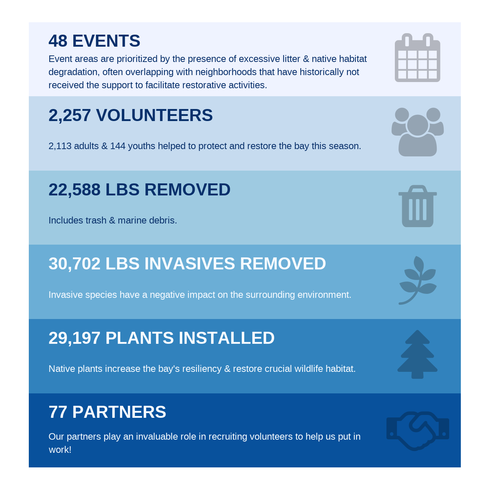

PE-1
Promote public involvement in bay restoration and protection
OBJECTIVES:
Increase direct citizen involvement in restoring and protecting Tampa Bay via volunteer programs that provide opportunities for citizens to participate in bay restoration, cleanup and monitoring.
STATUS:
Ongoing. TBEP awards about $90,000 in grants annually to support volunteer-based environmental education and restoration projects. In addition, TBEP organizes about six volunteer work days each year for restoration projects at parks and preserves in the Tampa Bay watershed. Numerous non-profit and government partners sponsor environmental volunteer activities as well.
BACKGROUND:
Direct community involvement in protecting the environment empowers citizens to become better stewards of the bay. Engaging citizens in restoring and protecting Tampa Bay can increase support for and confidence in government actions to fund and regulate natural resource protection. Furthermore, directly involving citizens in restoration provides critically needed labor and materials required to manage thousands of acres of land, wetlands and waters across the region. The Tampa Bay Estuary Program and its government and non-profit partners actively sponsor volunteer programs that provide opportunities for citizens to participate in bay restoration, cleanup and monitoring.

The TBEP Bay Mini-Grant program fosters public participation in bay restoration by awarding grants of up to $5,000 to neighborhoods, schools and non-profit organizations for environmental education, restoration and pollution prevention projects. The grant funds are generated by sales of the Tampa Bay Estuary license plate; more than $1.6 million has been distributed to the community as of 2015.
On average, 20 projects are funded each year with about $90,000 in grants, including habitat restoration projects such as stormwater pond improvements, removal of invasive plants and shoreline plantings. From 2019 to 2021, $230,000 was awarded to 57 community-based restoration projects. Projects typically occur in neighborhoods, schools or on publicly owned lands. A “Golden Mangrove Award” is given every year to the outstanding Mini-Grant project, as determined by the TBEP Community Advisory Committee (CAC).
In 2015, the CAC embarked on its own initiative to build connections with local college students, both to increase appreciation of the bay’s value and to involve more college students in bay clean-up and restoration (see Action PE-2).
TBEP also organizes the Give-A-Day for the Bay volunteer program. Each year, workdays involving several hundred volunteers are held at parks and preserves across the watershed. Activities include invasive plant removal, oyster reef building, planting native shoreline plants and trail maintenance. From 2019-2021, TBEP co-hosted 25 Give-A-Day events with 35 bay-area partners where volunteers planted 2,680 plants and removed 9,175 pounds of debris and litter. TBEP works with local non-profit and government partners to identify projects and assist with project logistics.
Since 2014, TBEP has partnered with Eckerd College’s Office of Service Learning to improve awareness of the bay among Eckerd students and facilitate student participation in bay restoration. Eckerd students attend Give A Day workdays, help clean the trash-collecting “water goat” in the canal outside TBEP’s office in St. Pete and participate in Into The Streets full-day experiential learning and service days around the bay. Approximately 750 pounds of trash are collected at each event.
Tampa Bay Watch (TBW) is an important non-profit partner with an enormously successful, long-running volunteer program. TBW engages citizens in a variety of bay restoration and protection projects, including oyster reef restoration, salt marsh planting, seagrass restoration, monofilament line removal from bird nesting islands, derelict crab trap removal, coastal cleanup of marine debris and scallop monitoring. Each year, some 6,000 volunteers participate in 125 events. For example, in 2015, volunteers removed 207 derelict crab traps, constructed 15,471 square feet of oyster shell bar, removed 6,343 pounds of shoreline debris and recovered 237 miles of fishing line from 144 monofilament recycling tubes around Tampa Bay. To date, TBW volunteers have planted more than 854,000 cord grass plugs to help restore 173 acres of salt marsh. Tampa Bay Watch provides opportunities for volunteers of all ages and skill level, including family-friendly events.

Keep Tampa Bay Beautiful (KTBB) is another example of a non-profit partner with volunteer programs that have baywide impact. KTBB is one of four Keep America Beautiful affiliates in the Tampa Bay Area. The group focuses on litter prevention, waste reduction and community beautification. In 2015, the non-profit organized almost 1,000 events and recruited more than 16,000 volunteers to remove 626,000 pounds of trash and plant 3,700 trees, shrubs and gardens across 13,000 acres in the Tampa Bay Area. One of its largest annual events is the Hillsborough River Cleanup, which in 2015 cleaned 90,000 pounds of trash from 87 sites along the Hillsborough River. Other programs and partnerships include Trash Free Waters, Clean Your Block Party, Adopt-A-Road and Into the Streets, which engages local college students in cleanups.
Manatee County Parks and Natural Resources Division actively recruits volunteers to assist with ongoing restoration, resource monitoring and preserve maintenance across almost 30,000 acres of natural lands and parks. Through an online registration process, interested adult volunteers are matched with volunteer assignments that meet their skills and interests and the needs of land managers. Engagement varies from special one-time events, to once-a-month work days at preserves, to more permanent assignments working several days a week. The RIP (Restoring Important Places) Squad, meets at least monthly at different preserves around the County to work alongside park rangers on land management activities, while learning about local ecology and wildlife. In addition to publicly advertised events, special service learning projects are offered to organized groups, such as homeschoolers, youth groups and clubs, corporate groups, fitness groups and geo-cachers.
A high percentage of dedicated volunteers are active retirees. Families are another significant source of volunteers, as well as students with community service requirements. Many volunteer events, especially those organized for students, provide opportunities for trash cleanups. While this Activity is important, it may also reinforce a simplified perception that removing trash is the only way in which they can make a difference. Expanded participation is needed in hands-on restoration and monitoring efforts that include interpretive education on a broad array of watershed issues, especially among “under-involved” groups, like young people and minority communities.
Increasing participation among minority communities requires reducing barriers to participation, which could be transportation, free time or peer-to-peer encouragement. Rather than inviting volunteers to join an event, the events could be brought to them at convenient times and places. Self-organized groups within minority communities — such as faith groups, community and youth centers, business groups and large employers — could be engaged with environmental volunteer events organized specifically for their group and neighborhood. Person-to-person connections are critical for establishing trust and maintaining outreach to groups in minority communities. The TBEP Bipartisan Infrastructure Law Equity Strategy (Simmons, Burke, and Sherwood 2023) and Equitable Stakeholder Engagement Memorandum further guide efforts to better engage underserved communities and identify programmatic initiatives that reflect the diverse needs of the Tampa Bay community. These new equity strategies are incorporated in the CCMP (2023 Interim Update).
Simmons, B. A., M. C. Burke, and E. T. Sherwood. 2023. “Bipartisan Infrastructure Law Equity Strategy.” 10-23. St. Petersburg, Florida: Tampa Bay Estuary Program. https://drive.google.com/file/d/1OAS6774u1J76v5FvEgrTpHhVotTmTY6M/view?usp=drive_link.

Young people have similar barriers to participation, so a parallel strategy could be used to reach out to organized youth groups, including scouts, sports teams, faith groups and school clubs. Youth also respond to competition and recognition, so structuring the Activity as a contest with prizes could motivate participation.
Partnership with local schools and organizations who serve at-risk populations include cleanups and storm drain markings in the Sulphur Springs community in Tampa, as well as work with the Museum of Science and Industry’s YES! Team (Youth Enriched by Science, Technology, Engineering, Art, and Math), a service-learning program that involves underserved students in community service activities. Tampa Bay Watch also partners with AMIKids, an alternative education program offering experiential training and activities associated with marine industries.
Recognition also is an important component of successful volunteer programs, through volunteer appreciation events or awards. TBEP honors outstanding volunteers annually. Tampa Bay Watch, the Keep America Beautiful affiliates, The Florida Aquarium and many other organizations have annual volunteer awards and/or thank-you events.